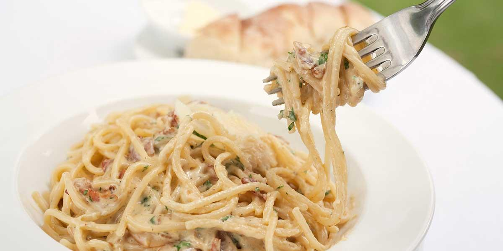

Inicio
Categorias
Italiana
Lasaña
Carbonara
Pizza
Mexicana
Contacto
Platillos
Pasta carbonara
Ingredientes
2 tajadas de tocineta, cortada en trozos pequeños (56 g)
1 sobre de BASE SALSA CARBONARA MAGGI® (50 g)

2 tazas de leche (500 ml)
5 tazas de agua (1250 ml)
½ libra de pasta espagueti (250 g)
4 cucharadas de queso parmesano (20 g)
Preparacion
PASO 1: En una olla a fuego medio sofríe la tocineta hasta que esté bien crocante, aparte disuelve la BASE SALSA CARBONARA MAGGI® en la leche, agrega a la olla y cocina sin dejar de revolver hasta que hierva y espese, luego apaga el fuego.
PASO 2: Mientas tanto, en una olla añade las tazas de agua, lleva a fuego alto hasta que hierva, adiciona la pasta y cocina de 8 a 10 minutos, después retira del fuego.
PASO 3: Agrega la pasta cocinada a la SALSA CARBONARA MAGGI® preparada anteriormente, revuelve con cuidado para integrar bien, sirve y espolvorea el queso parmesano encima.
Contacto
Whatsapp
Instagram
Facebook
Youtube